<body class="tracking-tight">
  <nav
    class="fixed top-0 z-[100] flex w-full items-center justify-between gap-10 overflow-x-hidden bg-[#000D23]/80 px-6 py-3 text-lg font-medium text-white shadow-sm shadow-[#4a336b] backdrop-blur-lg sm:px-10 md:gap-4"
  >
    <a href="/">
      </a>
    

    <!-- Top Navigation -->
    <ul
      class="hidden w-[80%] items-center justify-center gap-6 px-5 text-sm md:flex md:gap-10 lg:gap-16 lg:text-lg"
    >
      <li>
        <a
          href="index.html"
          class="duration-300 ease-in-out hover:text-green-500"
          >HOME</a
        >
      </li>
      <li
        onmouseover="slideIn()"
        onmouseleave="slideOut()"
        class="cursor-pointer duration-300 ease-in-out hover:text-green-500"
      >
        ABOUT
      </li>
      <li
        onmouseover="slideSolutionsNavIn()"
        onmouseleave="slideSolutionsNavOut()"
        class="cursor-pointer duration-300 ease-in-out hover:text-green-500"
      >
        SOLUTIONS
      </li>
      <li>
        <a
          href="contact.html"
          class="duration-300 ease-in-out hover:text-green-500"
          >CONTACT</a
        >
      </li>

      <li>
        <a href="contact.html" class="duration-300 ease-in-out"
          ><button
            type="button"
            class="flex items-center justify-center text-nowrap rounded-xl bg-blue-500 px-4 py-2 text-white duration-300 ease-in-out hover:rounded-md hover:bg-blue-600"
          >
            Request a demo
          </button></a
        >
      </li>
    </ul>
  </nav>

  <script src="main.js"></script>
</body>
